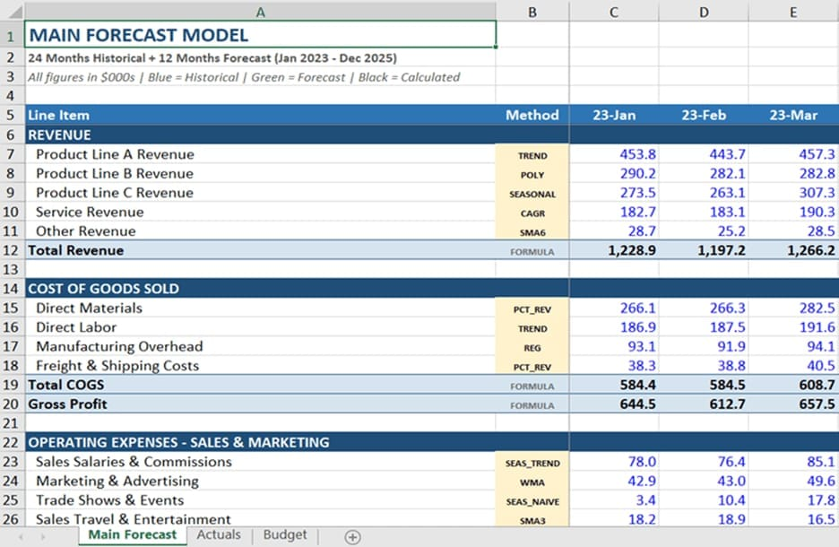
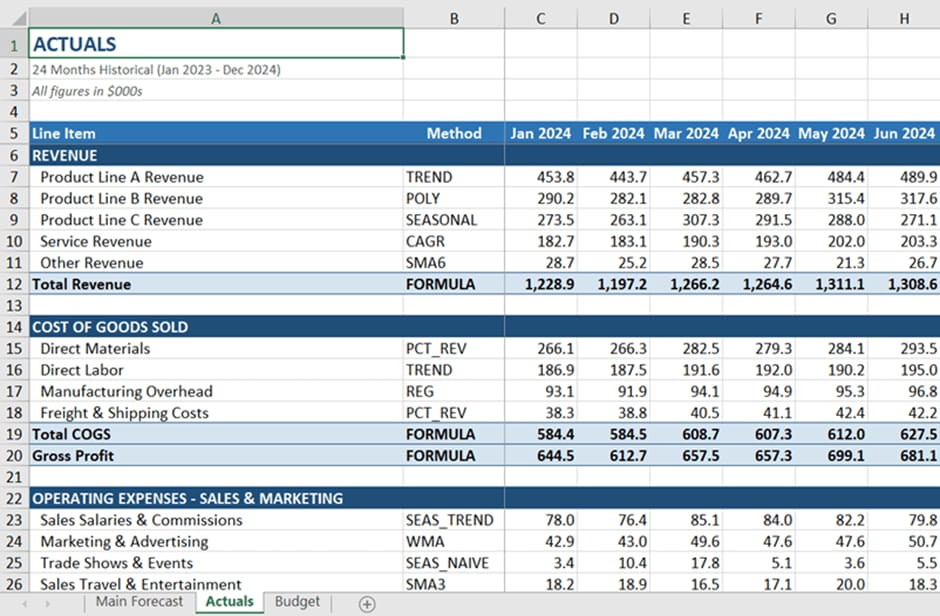
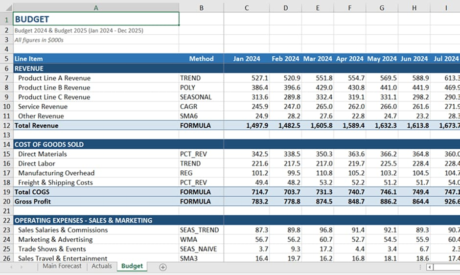
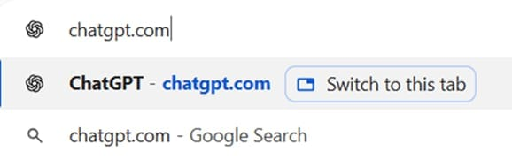
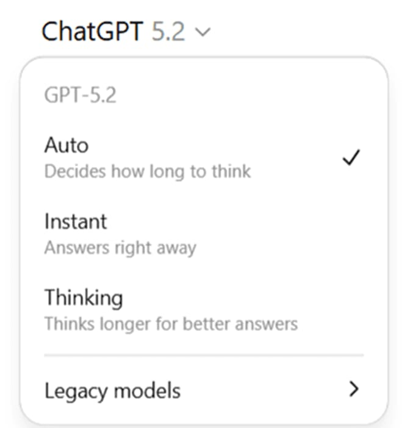
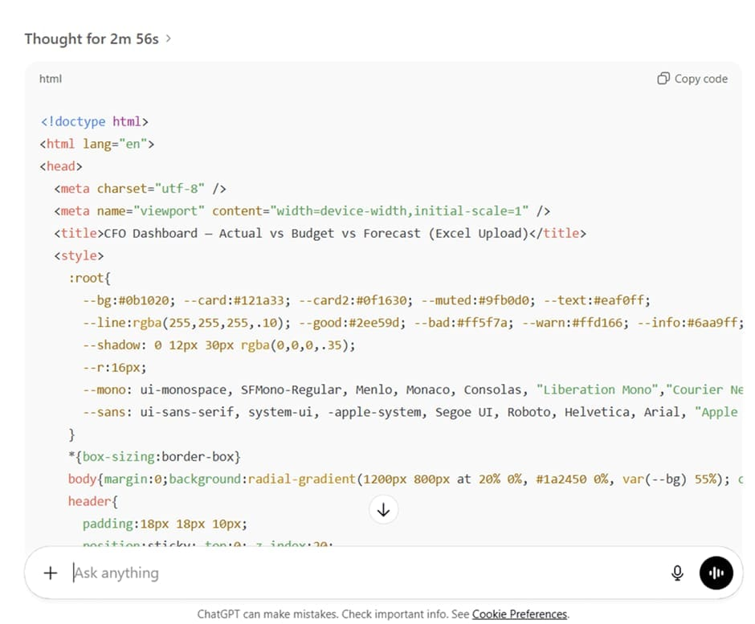

ישיבת דירקטוריון רבעונית. סיימת מצגת מבריקה על האסטרטגיה לטווח הבינוני. אתה מרגיש בשיא. ואז, היו"ר מצמצם עיניים לעבר שקופית 14 ושואל: "מה יקרה ל-EBITDA אם נדחה את הרחבת המחסן בשלושה חודשים, אבל עלויות העבודה יישארו בקצב הנוכחי?"
החדר משתתק. במצגת ה-PDF הסטטית שלך אין תשובה. הנתונים קבורים במודל אקסל כבד שלוקח לו נצח לחשב מסלול מחדש. שתי אפשרויות: לנחש — או להגיד "אחזור אליך בשבוע הבא".
הדממה הזו? זה הצליל של הסמכות המקצועית שדולפת מהחדר.
למה זה חשוב עכשיו?
הבעיה היא לא שאתה לא מכיר את העסק. הבעיה היא שהדיווח שלך סטטי, בעוד שהעסק דינמי.
מערכות BI מסורתיות נכשלות בדיוק בנקודה הכי קריטית — חדר הישיבות:
- קשיחות: כל שינוי ב-KPI דורש קריאת שירות ל-IT. עד שחוזרים אליך, הישיבה הסתיימה.
- פיגור בנתונים: אתם מקבלים את הנתונים של אתמול, כשבזמן משבר צריך את הנתונים של הרגע.
- עלות הטמעה: פרויקט BI ארגוני עולה מאות אלפי שקלים ולוקח חודשים.
הפתרון: דאשבורד אינטראקטיבי שנבנה על ידי AI, רץ כקובץ HTML עצמאי בדפדפן שלך — מאובטח, מהיר, ואפס IT.
5 ויזואליזציות ליבה לכל CFO
לפני שמתחילים לבנות — חשוב לדעת מה לבקש. אלו 5 העוגנים שכל דאשבורד CFO חייב לכלול:
שלב 1 — הכנת "המוח הפיננסי": אקסל שטוח
אל תזינו נתונים מבולגנים ל-AI. ההצלחה של הדאשבורד תלויה בפשטות הקלט. הכינו טבלה שטוחה (Flat Table) עם חמישה עמודות בלבד:
- תאריך — בפורמט אחיד (לדוגמה: 2026-01)
- קטגוריה — הכנסות / עלות מכר / הוצאות תפעוליות
- סעיף — שורת P&L ספציפית
- ערך בפועל — מספר בלבד
- ערך תקציב — מספר בלבד
עבדו ביחידות של אלפי שקלים/דולרים — הויזואליזציה תישאר נקייה וקריאה.



שלב 2 — הנדסת הפרומפט: מה לומר ל-AI
פתחו את ChatGPT (עדיפות לגרסת Plus/Pro) והשתמשו בפרומפט המדויק הבא:
"אני CFO. בנה לי דאשבורד אינטראקטיבי בקובץ HTML יחיד. הקובץ צריך לאפשר לי להעלות קובץ אקסל (בצד הלקוח), לנתח שונות (Variance) בין תקציב לביצוע, ולהציג תרשים Waterfall ומגמות חודשיות. השתמש בספריית Chart.js. ודא שהנתונים מעובדים מקומית בדפדפן מטעמי אבטחה."


שלב 3 — הפיכה לקובץ עובד: מקוד לדאשבורד
ארבעה צעדים פשוטים והדאשבורד שלכם חי:
-
1
העתיקו את הקוד שנוצר על ידי ChatGPT
-
2
הדביקו אותו ב-Notepad (Windows) או TextEdit (Mac)
-
3
שמרו את הקובץ עם סיומת .html — לדוגמה: Dashboard_2026.html
-
4
פתחו את הקובץ בכרום או פיירפוקס — וגררו אליו את קובץ האקסל שהכנתם
זהו. הדאשבורד שלכם חי, מגיב, ומאפשר "מה אם" בזמן אמת.
שלב 4 — אבטחת המידע: הפיל שבחדר
החשש הגדול ביותר של מנהלי כספים: "האם הנתונים שלי דולפים ל-AI?"
ה-AI בונה רק את הכלי — הקוד. הנתונים שלכם לעולם לא עוזבים את המחשב שלכם. כל העיבוד קורה בזיכרון הדפדפן (Client-side Processing). זהו מענה ל-99% מפרוטוקולי האבטחה הארגוניים.

מוזמנים להצטרף לקהילת AI Finance Transformation בוואטסאפ —
עדכונים, דוגמאות וכלים מהשטח לפני כולם:
אל תנסו לבנות מערכת שלמה מהיום הראשון. קחו דוח אחד בלבד — בקשו מה-AI לייצר לו גרף Waterfall אינטראקטיבי ב-HTML. ברגע שתראו את המבט של המנכ"ל כשישנה פרמטר ותראו את הגרף מתעדכן תוך שנייה — לא תחזרו לעולם ל-PDF.
סיכום — מה לוקחים מהמאמר הזה?
- CFO שמציג דוח סטטי הוא היסטוריון; CFO שמאפשר "מה אם" בזמן אמת הוא נווט אסטרטגי
- 4 שלבים בלבד: אקסל שטוח ← פרומפט נכון ← שמירה כ-HTML ← גרירת הקובץ
- האבטחה פתורה לחלוטין: ה-AI בונה את הכלי, הנתונים נשארים אצלכם
- נקודת התחלה: ויזואליזציה אחת (Waterfall) — ולא מערכת שלמה
קישורים לחומר נוסף: